In Le bizzarre avventure di JoJo (JoJo's Bizarre Adventure),
uno Stand è la manifestazione fisica dell'energia vitale e spirituale del proprio
In parole semplici, è un
potere paranormale che assume la forma di un guardiano o
di un'entità spettrale che combatte al fianco del suo possessore (chiamato Portatore o Stand User).
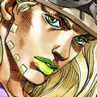
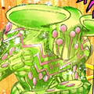
Gyro è un boia del Regno di Napoli e co-protagonista della Parte 7. Il suo Stand Ball Breaker incanala l'energia della Rotazione Aurea perfetta.
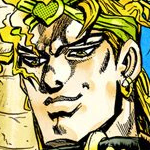
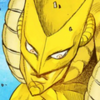
DIO è lo storico antagonista della serie, un vampiro carismatico e spietato. Il suo Stand The World possiede una forza e una velocità straordinarie, ed è in grado di fermare il tempo per diversi secondi.
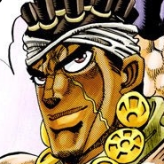
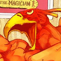
Avdol è un indovino egiziano e un fedele alleato nel viaggio verso il Cairo. Il suo Stand Magician's Red ha la forma di un uccello antropomorfo e manipola fiamme ad altissima temperatura capaci di fondere il metallo.
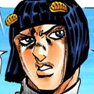
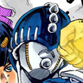
Bucciarati è il leader carismatico della sua squadra in Vento Aureo. Il suo Stand Sticky Fingers crea cerniere lampo su qualsiasi superficie, permettendogli di smontare oggetti, creare passaggi e sferrare colpi a sorpresa.
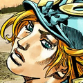
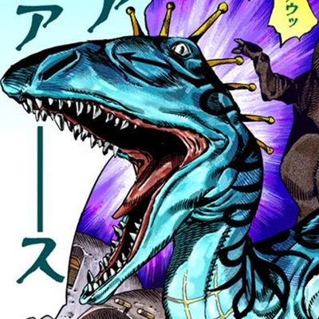
Diego è un abile ed egocentrico fantino inglese, controparte di DIO nella Parte 7. Il suo Stand Scary Monsters gli permette di trasformare se stesso e altri esseri viventi in feroci dinosauri sotto il suo controllo.
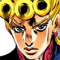
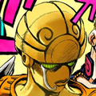
Giorno è il protagonista della Parte 5, figlio di DIO con il corpo di Jonathan Joestar. Il suo Stand Gold Experience dona la vita agli oggetti inanimati, trasformandoli in piante o animali e cura le ferite rimodellando la materia.
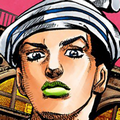
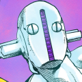
Jotaro è il protagonista della Parte 3. Il suo Stand Star Platinum ha una forza devastante, velocità sovrumana e può fermare il tempo.
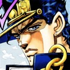
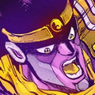
Jotaro è il protagonista della Parte 3. Il suo Stand Star Platinum ha una forza devastante, velocità sovrumana e può fermare il tempo.
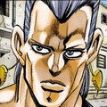
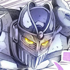
Polnareff è uno spadaccino francese in cerca di vendetta che si unisce al gruppo di Jotaro. Il suo Stand Silver Chariot è un cavaliere armato di fioretto dotato di una velocità inarrivabile.
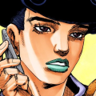
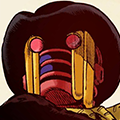
Tooru è il principale antagonista della Parte 8. Il suo Stand Wonder of U incarna la legge della sventura: chiunque provi a inseguire o investigare su di lui viene colpito da calamità e incidenti fatali apparentemente casuali.
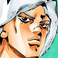
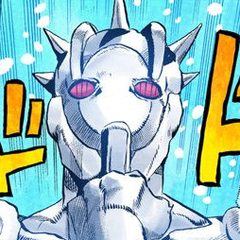
Weather Report è un enigmatico amnesico alleato di Jolyne nella Parte 6. Il suo Stand omonimo gli permette di controllare l'atmosfera e i fenomeni meteorologici a qualsiasi scala, fino a provocare bizzarre piogge e alterazioni percettive.
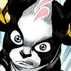
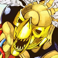
Iggy è un Boston Terrier scontroso e indipendente che si unisce ai Stardust Crusaders. Il suo Stand The Fool è fatto di pura sabbia e gli consente di mutare forma, creare costrutti sabbiosi ed essere immune ai danni diretti.
Uno Stand è la manifestazione fisica dell'energia spirituale e vitale di un individuo. Ognuno possiede capacità e forme uniche!
Il modo migliore è seguire l'ordine delle Parti, partendo dalla Parte 1: Phantom Blood fino alle serie più recenti.
A partire dalla Parte 3 (con i Tarocchi e gli Dei Egizi) e soprattutto dalla Parte 4 in poi, quasi tutti gli Stand prendono il nome da famose band musicali, album o canzoni rock/pop!
Aggiungiamo costantemente nuove schede dettagliate.